Semester Three Project 2: Coded Messaging System
The Coded Messaging System was another collaborative Engineering Project and my second project completed with Noah Grant. We developed a console-based C application that could send and receive text, audio, and file messages over a serial connection, while applying selectable compression and encryption methods to the message payload.
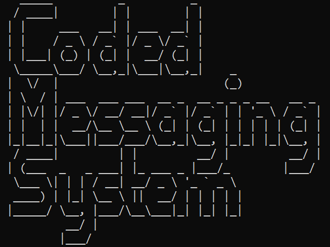
Project Overview
The application is organized around a numbered command-line menu. Users can configure a COM port, choose a compression method, select an encryption method, set a key, manage contacts, and choose whether they want to send, receive, or inspect messages. The same interface also exposes audio recording and playback, file transmission, diagnostic tests, and a queue for received messages.
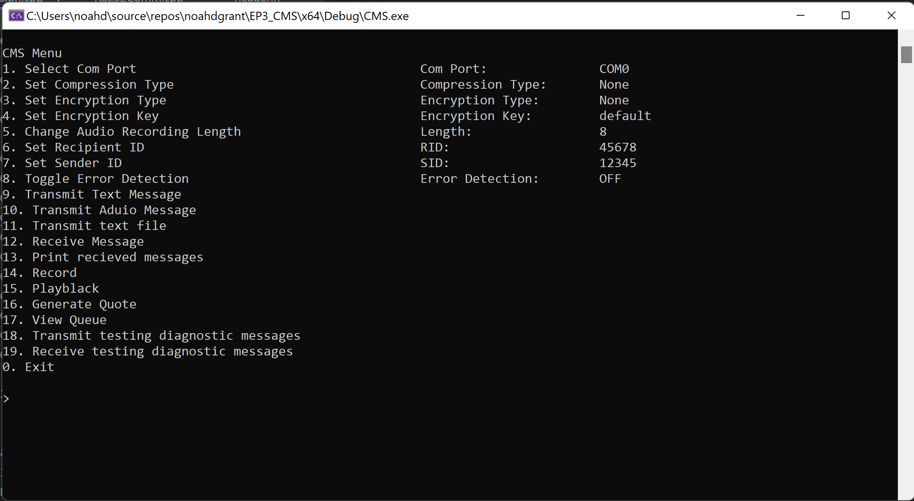
The main menu exposes the application's messaging and testing functions.
Message Configuration
Before sending a message, the user configures the serial connection and the transformations applied to the payload. The system supports no compression, RLE, Huffman, and a combined Huffman and RLE option. Encryption can be disabled or handled with XOR or Vigenere. A configurable recording length controls audio messages, while sender and recipient IDs identify the endpoints.
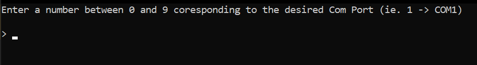
Selecting the serial COM port.
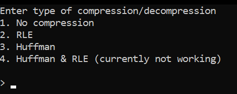
Choosing a compression method.
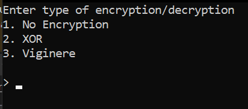
Choosing an encryption method.
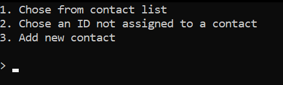
Creating a new contact or selecting an existing contact.
Sending and Receiving
The system supports three payload types: text messages, recorded audio, and text files. Text messages are entered directly in the console, audio can be recorded to a buffer and played back, and files are selected by filename before transmission. Incoming messages are decoded and placed in a queue with their sender, recipient, priority, payload type, and payload size preserved.
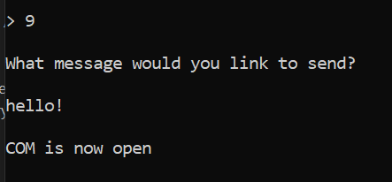
Sending a text message through the console.
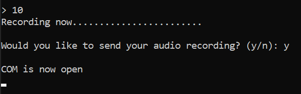
Recording an audio message for transmission.
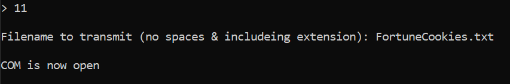
Transmitting a text file by filename.
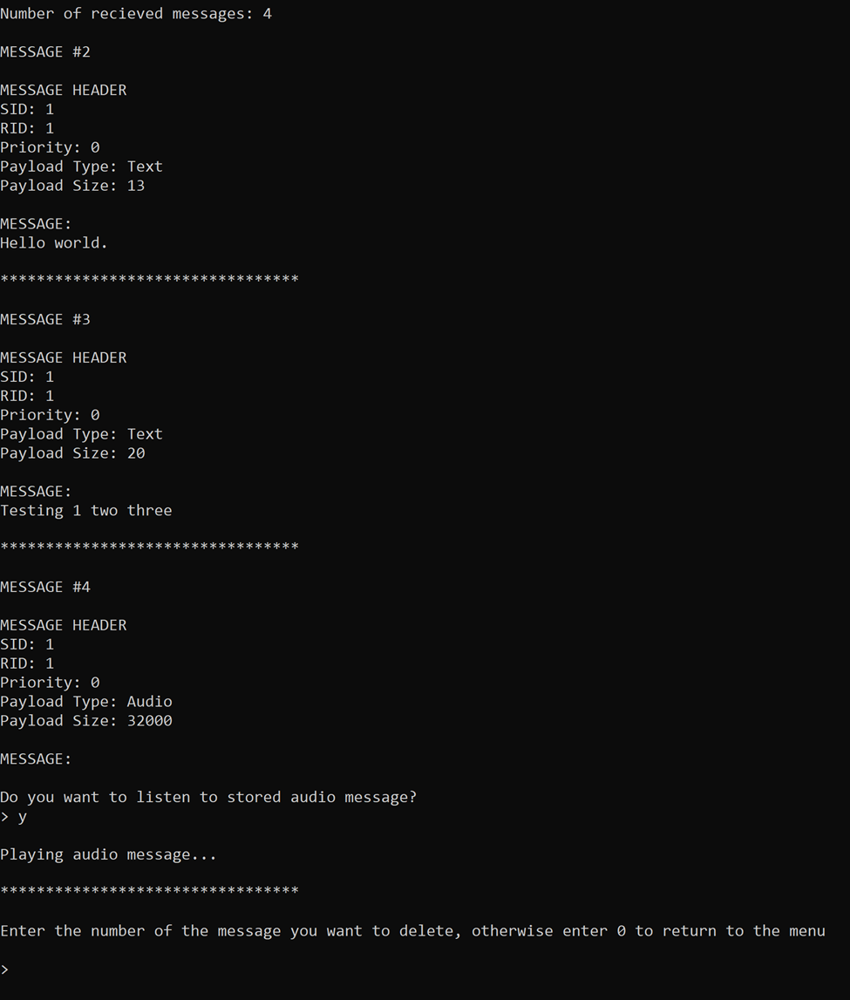
The message queue showing text and audio payload details.
Compression and Encryption
Compression and encryption are applied as separate processing stages. The diagnostic workflow sends known test messages through each supported combination, then checks that the receiver reports successful reception and reconstructs the original message. This made it possible to compare plain text with Huffman and RLE compressed payloads while also testing XOR and Vigenere encryption.
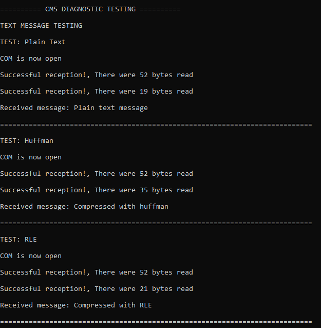
Receiving-side diagnostic tests for plain text, Huffman, and RLE.
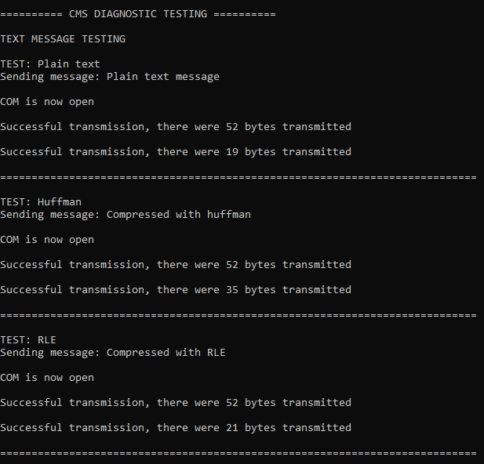
Transmission-side diagnostic results and byte counts.
Implementation and Testing
The project used structured message headers to carry sender and recipient IDs, encryption and compression selections, the active COM connection, and recording settings along with each payload. Testing covered the individual menu functions, message transmission and reception, audio recording and playback, file sending, queue management, and diagnostic combinations.
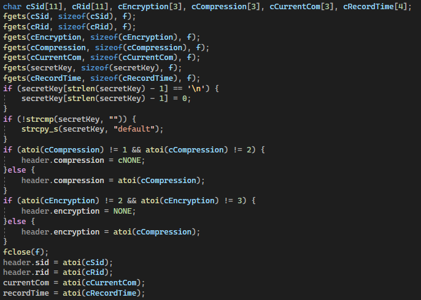
Loading and validating saved user settings.
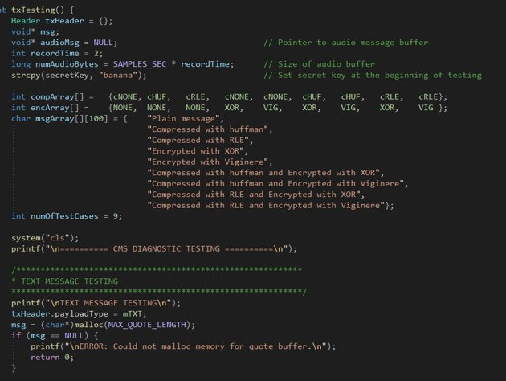
Defining the diagnostic test cases and message combinations.
Outcome
The completed system brought together serial communication, data structures, file I/O, audio buffering, compression, encryption, and a multi-function command-line interface in one application. The project also created a repeatable diagnostic process, making it easier to verify both ends of the communication path and confirm that encoded messages could be restored correctly.